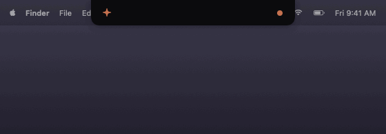
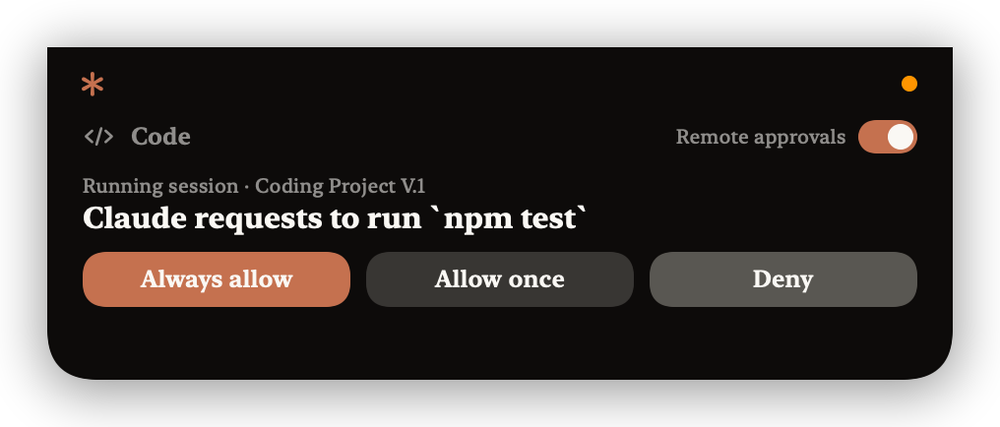
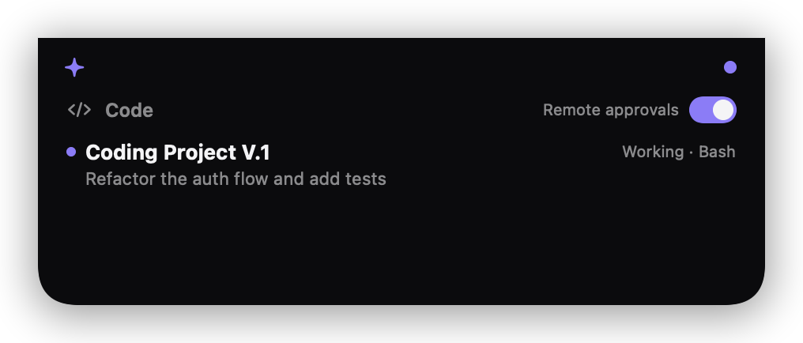

An open-source dynamic island for your MacBook: watch what Claude is working on and approve its requests — without touching the terminal.
curl -fsSL https://raw.githubusercontent.com/PShato0x/claude-widget/main/get.sh | bash
macOS 14+ · Apple Silicon · Node.js 18+ · Xcode Command Line Tools · builds from source, no binaries shipped

Real capture — a request arrives, one click on Always allow, back to work.
When Claude wants to run a command or edit a file, the island expands with Always allow / Allow once / Deny. Clicking never steals focus from your work.
Always allow saves a rule like Bash:npm — matching requests auto-approve from then on. Rules live in a plain JSON file you control.
A quiet dot pulses terracotta while Claude works, turns orange when it needs you. Hover to peek at every session and its last prompt.
Relay down? Didn't answer in time? Claude Code falls back to its normal terminal prompt. Nothing is ever approved without you.
The relay is a single-file Node server; the island is native SwiftUI built by plain swiftc. No Electron, no frameworks, ~400 KB.
The island tells you when a new version ships. claude-widget update pulls, rebuilds, and restarts everything.

